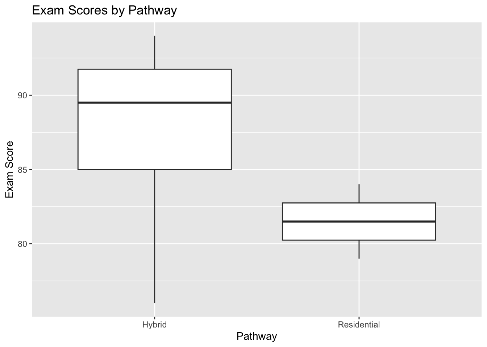

library(tidyverse)Data Cleaning for Rehab Education Data
Welcome
Messy data are part of real educational work. Whether you are reviewing assessment scores, attendance, course evaluations, or program outcomes, the data you receive are rarely analysis-ready. This lesson introduces basic principles of data cleaning using examples relevant to rehabilitation education.
By the end of this lesson, you will be able to:
- identify common data quality problems in educational datasets
- inspect a dataset before beginning analysis
- rename variables to improve clarity
- handle missing values intentionally
- check for duplicates and inconsistent values
- create cleaned variables for simple analysis
Why Data Cleaning Matters
In rehabilitation education, data often come from:
- exam exports
- LMS downloads
- course evaluation files
- student tracking spreadsheets
- clinical education records
These datasets may contain missing values, inconsistent labels, extra spaces, duplicate rows, or unclear variable names. Cleaning helps ensure that your summaries, charts, and decisions are based on data that are interpretable and trustworthy.
Packages
We will use tools from the tidyverse.
Example Dataset
In this lesson, we will create a small example dataset that looks like the kind of information a faculty member or program leader might review.
rehab_data <- tibble(
student_id = c(1001, 1002, 1003, 1003, 1004, 1005, 1006, 1007),
pathway = c("Residential", "Hybrid", "Residential", "Residential", "Hybrid ", "hybrid", "Hybrid", "Residential"),
exam_score = c(84, 91, NA, NA, 76, 88, 94, 79),
attendance_rate = c(0.96, 0.88, 0.91, 0.91, NA, 0.85, 0.99, 0.92),
final_status = c("Pass", "Pass", "At Risk", "At Risk", "pass", "Pass", "Pass", "Pass "),
notes = c("", "needs follow-up", "missing exam", "missing exam", NA, "", "excellent", "")
)
rehab_data# A tibble: 8 × 6
student_id pathway exam_score attendance_rate final_status notes
<dbl> <chr> <dbl> <dbl> <chr> <chr>
1 1001 "Residential" 84 0.96 "Pass" ""
2 1002 "Hybrid" 91 0.88 "Pass" "needs follo…
3 1003 "Residential" NA 0.91 "At Risk" "missing exa…
4 1003 "Residential" NA 0.91 "At Risk" "missing exa…
5 1004 "Hybrid " 76 NA "pass" <NA>
6 1005 "hybrid" 88 0.85 "Pass" ""
7 1006 "Hybrid" 94 0.99 "Pass" "excellent"
8 1007 "Residential" 79 0.92 "Pass " "" Step 1: Look at the Data First
Before cleaning, inspect the dataset.
glimpse(rehab_data)Rows: 8
Columns: 6
$ student_id <dbl> 1001, 1002, 1003, 1003, 1004, 1005, 1006, 1007
$ pathway <chr> "Residential", "Hybrid", "Residential", "Residential",…
$ exam_score <dbl> 84, 91, NA, NA, 76, 88, 94, 79
$ attendance_rate <dbl> 0.96, 0.88, 0.91, 0.91, NA, 0.85, 0.99, 0.92
$ final_status <chr> "Pass", "Pass", "At Risk", "At Risk", "pass", "Pass", …
$ notes <chr> "", "needs follow-up", "missing exam", "missing exam",…A quick review shows several issues:
student_id1003 appears twicepathwayvalues are inconsistent ("Flex","Flex ","flex")final_statusvalues are inconsistent ("Pass","pass","Pass ")- there are missing values in
exam_score,attendance_rate, andnotes
Step 2: Standardize Variable Names
Sometimes imported datasets have inconsistent or hard-to-read names. A good goal is to use short, clear, lowercase variable names.
Our example names are already relatively clean, but this is a good place to show the principle.
clean_names_data <- rehab_data %>%
rename(
status = final_status,
attendance = attendance_rate
)
clean_names_data# A tibble: 8 × 6
student_id pathway exam_score attendance status notes
<dbl> <chr> <dbl> <dbl> <chr> <chr>
1 1001 "Residential" 84 0.96 "Pass" ""
2 1002 "Hybrid" 91 0.88 "Pass" "needs follow-up"
3 1003 "Residential" NA 0.91 "At Risk" "missing exam"
4 1003 "Residential" NA 0.91 "At Risk" "missing exam"
5 1004 "Hybrid " 76 NA "pass" <NA>
6 1005 "hybrid" 88 0.85 "Pass" ""
7 1006 "Hybrid" 94 0.99 "Pass" "excellent"
8 1007 "Residential" 79 0.92 "Pass " "" Step 3: Clean Text Values
Educational data often contain extra spaces, inconsistent capitalization, or multiple spellings for the same category.
We can clean those values using str_trim() and str_to_title().
clean_text_data <- clean_names_data %>%
mutate(
pathway = str_trim(pathway),
pathway = str_to_title(pathway),
status = str_trim(status),
status = str_to_title(status)
)
clean_text_data# A tibble: 8 × 6
student_id pathway exam_score attendance status notes
<dbl> <chr> <dbl> <dbl> <chr> <chr>
1 1001 Residential 84 0.96 Pass ""
2 1002 Hybrid 91 0.88 Pass "needs follow-up"
3 1003 Residential NA 0.91 At Risk "missing exam"
4 1003 Residential NA 0.91 At Risk "missing exam"
5 1004 Hybrid 76 NA Pass <NA>
6 1005 Hybrid 88 0.85 Pass ""
7 1006 Hybrid 94 0.99 Pass "excellent"
8 1007 Residential 79 0.92 Pass "" Now the pathway and status values are more consistent.
count(clean_text_data, pathway)# A tibble: 2 × 2
pathway n
<chr> <int>
1 Hybrid 4
2 Residential 4count(clean_text_data, status)# A tibble: 2 × 2
status n
<chr> <int>
1 At Risk 2
2 Pass 6Step 4: Identify Missing Values
Missing values are common and should be examined intentionally rather than ignored.
colSums(is.na(clean_text_data))student_id pathway exam_score attendance status notes
0 0 2 1 0 1 This tells us how many missing values appear in each column.
We can also filter to rows with missing exam scores.
clean_text_data %>%
filter(is.na(exam_score))# A tibble: 2 × 6
student_id pathway exam_score attendance status notes
<dbl> <chr> <dbl> <dbl> <chr> <chr>
1 1003 Residential NA 0.91 At Risk missing exam
2 1003 Residential NA 0.91 At Risk missing examIn real program data, you would ask:
- Is the value truly missing?
- Was the assessment not taken?
- Is the student withdrawn or incomplete?
- Does this need follow-up before analysis?
Step 5: Check for Duplicate Rows or IDs
Duplicate values can distort summaries.
Here we check for duplicated student IDs.
clean_text_data %>%
count(student_id) %>%
filter(n > 1)# A tibble: 1 × 2
student_id n
<dbl> <int>
1 1003 2Student 1003 appears more than once. That may be correct or incorrect depending on the context. In this example, it suggests duplicate data entry.
If we decide to keep only one row per student, we can do this:
no_duplicates_data <- clean_text_data %>%
distinct(student_id, .keep_all = TRUE)
no_duplicates_data# A tibble: 7 × 6
student_id pathway exam_score attendance status notes
<dbl> <chr> <dbl> <dbl> <chr> <chr>
1 1001 Residential 84 0.96 Pass ""
2 1002 Hybrid 91 0.88 Pass "needs follow-up"
3 1003 Residential NA 0.91 At Risk "missing exam"
4 1004 Hybrid 76 NA Pass <NA>
5 1005 Hybrid 88 0.85 Pass ""
6 1006 Hybrid 94 0.99 Pass "excellent"
7 1007 Residential 79 0.92 Pass "" Step 6: Create Useful Derived Variables
Once the data are cleaner, we can create variables that support interpretation.
For example, we might create a flag for students scoring below 80.
clean_rehab_data <- no_duplicates_data %>%
mutate(
below_80 = if_else(exam_score < 80, "Yes", "No", missing = "Missing"),
attendance_band = case_when(
is.na(attendance) ~ "Missing",
attendance >= 0.95 ~ "High",
attendance >= 0.90 ~ "Moderate",
TRUE ~ "Low"
)
)
clean_rehab_data# A tibble: 7 × 8
student_id pathway exam_score attendance status notes below_80 attendance_band
<dbl> <chr> <dbl> <dbl> <chr> <chr> <chr> <chr>
1 1001 Reside… 84 0.96 Pass "" No High
2 1002 Hybrid 91 0.88 Pass "nee… No Low
3 1003 Reside… NA 0.91 At Ri… "mis… Missing Moderate
4 1004 Hybrid 76 NA Pass <NA> Yes Missing
5 1005 Hybrid 88 0.85 Pass "" No Low
6 1006 Hybrid 94 0.99 Pass "exc… No High
7 1007 Reside… 79 0.92 Pass "" Yes Moderate Step 7: Summarize the Cleaned Data
Now that the data are more consistent, we can produce simple summaries.
clean_rehab_data %>%
group_by(pathway) %>%
summarize(
n_students = n(),
avg_exam_score = mean(exam_score, na.rm = TRUE),
avg_attendance = mean(attendance, na.rm = TRUE)
)# A tibble: 2 × 4
pathway n_students avg_exam_score avg_attendance
<chr> <int> <dbl> <dbl>
1 Hybrid 4 87.2 0.907
2 Residential 3 81.5 0.93 And we can look at counts for the new flag variables.
count(clean_rehab_data, below_80)# A tibble: 3 × 2
below_80 n
<chr> <int>
1 Missing 1
2 No 4
3 Yes 2count(clean_rehab_data, attendance_band)# A tibble: 4 × 2
attendance_band n
<chr> <int>
1 High 2
2 Low 2
3 Missing 1
4 Moderate 2A Simple Visualization
ggplot(clean_rehab_data, aes(x = pathway, y = exam_score)) +
geom_boxplot() +
labs(
title = "Exam Scores by Pathway",
x = "Pathway",
y = "Exam Score"
)
Key Takeaways
Cleaning is not just a technical step. It is part of responsible data use.
Before analyzing educational data, ask:
- Are the variable names clear?
- Are categories spelled consistently?
- Are there missing values that need interpretation?
- Are there duplicate records?
- Do I need to create cleaner variables for analysis?
In many cases, the quality of your conclusions depends on the quality of your cleaning decisions.
Practice Activity
Use the example dataset and try the following:
- Count the number of students in each status category.
- Filter to students with attendance below 0.90.
- Create a new variable for exam performance bands such as
Below 80,80 to 89, and90+. - Make a bar chart showing the number of students in each pathway.
Final Thoughts
Data cleaning is one of the most practical skills in rehabilitation education analytics. Faculty and students do not need advanced programming to benefit from it. Even a few consistent cleaning steps can make educational data easier to understand, summarize, and use for decision-making.
Session Info
Audience: Rehabilitation faculty, staff, and students beginning to work with educational data
Skill level: Beginner to early intermediate
Primary focus: Data inspection, cleaning, and preparation in R